|
Во избежание осцилляций графика поверхности после полиномиальной регрессии вводятся точки с нулевой аппликатой по краям расчетного квадрата | |||||
| 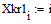 | 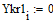 | 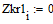 | 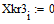 | 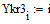 | 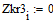 | |
| 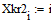 | 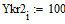 |
 |
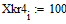 | 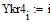 | 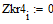 |
| Изменение базовой поверхности, растяжение, масштабирование. | |||
 |
 |
||
| 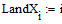 | 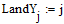 | 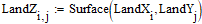 | |
| 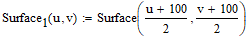 | |||
| 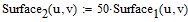 | 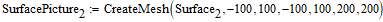 | ||
 |
 |
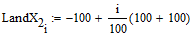 | 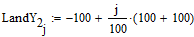 | 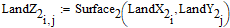 |
| Разностные схемы для расчета первых производных | ||
| 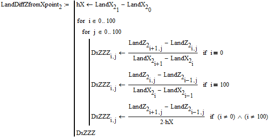 |
 |
|
| Функции первых производных | ||
| 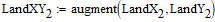 | ||
| 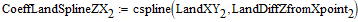 | 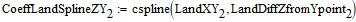 | |
| 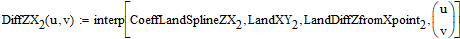 | 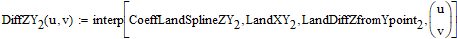 | |
| Введение равномерной сетки на поверхности | ||
| 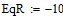 | ||
 |
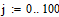 | |
| 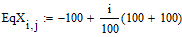 | 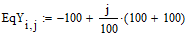 | |
| 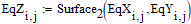 | |
| Определение точек эквидистантной поверхности | |
| 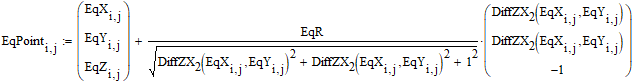 |
| Эквидистантная поверхность | "Квазиэквидистантная" поверхность | |
| Расчетные схемы для первых производных для "квазиэквидистантной" поверхности | |||
 |
|||
| Сопровождающий базис для "Кролика" | Сопровождащий базис для "Лисы" | |
| Базисные векторы мировой системы координат | ||
| Процедура преобразования векторов, как они выглядят из другой системы системы координат. | ||
| Координаты "Кролика" в параметрическом виде | Координаты "Лисы" в параметрическом виде | |
| Основной расчетный цикл | |
| Общее число кадров | ||||
| Расчет сопровождающего трехгранника | ||||
| Визуализация траекторий "Кролика" и "Лисы" | ||||
| Точка положения "Лисы" | ||||